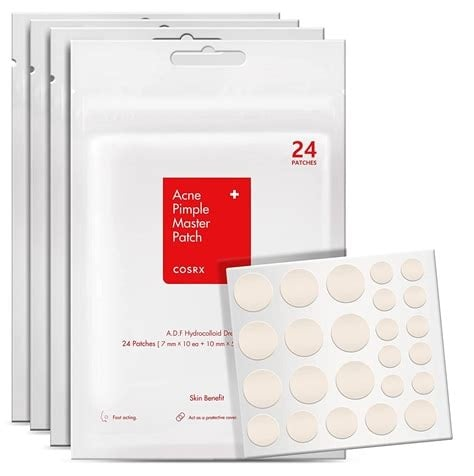
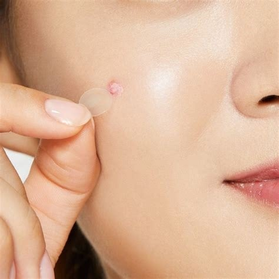
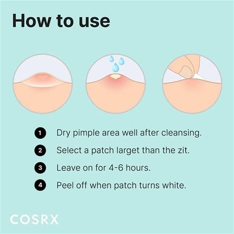

<div> <table style="border-collapse: collapse; width: 99.9809%;" border="1"><colgroup><col style="width: 49.9522%;"><col style="width: 49.9522%;"></colgroup> <tbody> <tr> <td> <div><span style="font-size: 14pt;"><strong>COSRX Plasturi de curatare pentru ten acneeic, 24buc.</strong></span></div> <div><span style="font-size: 14pt;">Cosrx Acne Pimple Master Patch contine 24 de plasturi rotunzi repartizati pe trei dimensiuni diferite (7 mm, 10 mm si 12 mm). Acest design inteligent asigura o acoperire perfecta si personalizata pentru orice tip de imperfectiune, garantand o aderenta optima.</span></div> </td> <td></td> </tr> <tr> <td></td> <td><span style="font-size: 14pt;">Prezentarea texturii ultra-subtiri si translucide a plasturilor hidrocoloidali, conceputi sa devina aproape invizibili pe ten. Marginile lor fine si izolarea excelenta impotriva bacteriilor permit purtarea discreta pe parcursul zilei, chiar si sub machiaj, prevenind in acelasi timp formarea cicatricilor post-acneice.</span></td> </tr> <tr> <td><span style="font-size: 14pt;">Pentru rezultate cat mai bune, zona afectata trebuie curatata si apoi uscata. Se selecteaza un patch cat mai apropiat ca si marime de dimensiunea imperfectiunii, se aplica si se mentie circa 4-6 ore. Cand patchul devine alb se indeparteaza.</span></td> <td style="text-align: center;"></td> </tr> </tbody> </table> </div>